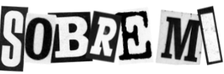
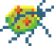
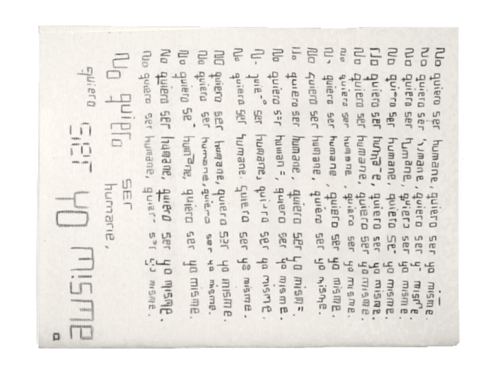
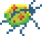
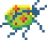

Ermes Olea - diseñadore, ilustradore y artista multidisciplinar de Madrid, España.
@2026
Archivo

Sobre mí
Contacto
🗒️ Dibuja Aquí

X
▲
▼
◄
►

[INDEX]
01. Fae 2025
02. Comadeja 2024
03. Vernalización 2025
04. Cortocircuito 2025
05. The Magnus Archives 2025


 
X

X